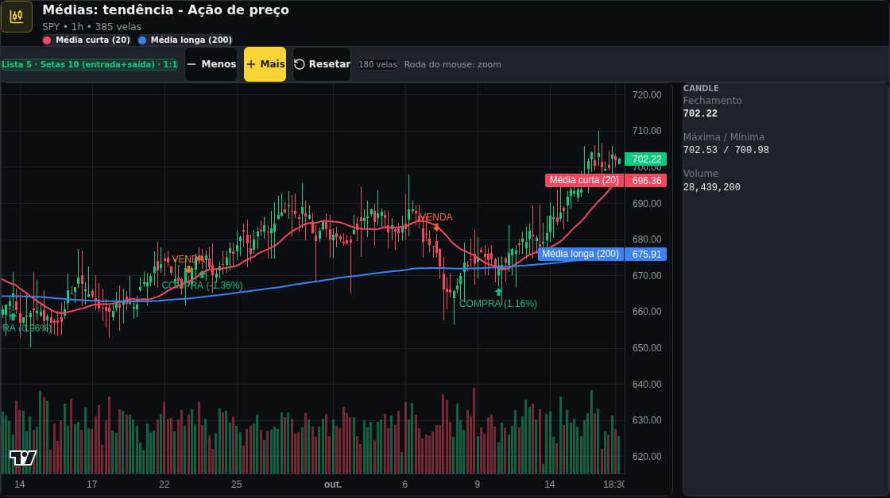

Trade 1 · encerrado
Oct 7, 2026, 11:30 → Oct 9, 2026, 15:30Horário de Nova York (EDT)
- Entrada
- 679.50 USD
- Saída
- 670.20 USD
Ações e ETFs ainda não podem ser favoritados: atualização diária e alertas dessas classes ainda não existem.
Versão vendida: entra quando a média curta cruza abaixo da média média com o preço abaixo da média longa; cobre no cruzamento contrário ou no stop de 1,15%.
Binance Ações · pregão regular de Nova York · ajustado por split · USD
O 15m, montado do 5m no pregão, cobre a janela inteira: stops e saídas foram simulados candle a candle de 15m.
Avisos: 1 saída com gap · short simulado · taxa assumida · posição com fração
Condições usadas para entrada, saída e proteção da operação.

Média curta (20)
length: 20
Painel price · participação entrada, saída
Função: Tendência curta
Média longa (200)
length: 200
Painel price · participação entrada
Função: Filtro de tendência
Trade 1 · encerrado
Oct 7, 2026, 11:30 → Oct 9, 2026, 15:30Horário de Nova York (EDT)
Trade 2 · encerrado
Sep 23, 2026, 09:30 → Sep 23, 2026, 13:15Horário de Nova York (EDT)
Trade 3 · encerrado
Sep 9, 2026, 12:30 → Sep 11, 2026, 14:30Horário de Nova York (EDT)
Trade 4 · encerrado
Aug 26, 2026, 10:30 → Aug 27, 2026, 09:30Horário de Nova York (EDT)
Stop com gap · stop 672.04, abriu 676.10
Trade 5 · encerrado
Aug 12, 2026, 11:30 → Aug 14, 2026, 13:30Horário de Nova York (EDT)
| Operação ↓ | Tipo | Data e hora (Nova York) | Sinal | Preço | Valor da posição | Lucro/Prejuízo | Máximo favorável | Máximo adverso | Resultado acumulado |
|---|---|---|---|---|---|---|---|---|---|
1 Venda | Entrada | Oct 7, 202611:30 EDT | Vender | 679.50 USD | 98.65 USD | ||||
| Saida | Oct 9, 202615:30 EDT | Cobrir | 670.20 USD | +1.15 USD, +1.16% | 3.30 USD , 3.35% | -0.44 USD , -0.45% | -0.21 USD , -0.21% | ||
2 Venda | Entrada | Sep 23, 202609:30 EDT | Vender | 668.30 USD | 100.01 USD | ||||
| Saida | Sep 23, 202613:15 EDT | Stop | 675.98 USD | -1.36 USD, -1.36% | 0.30 USD , 0.30% | -1.42 USD , -1.42% | -1.35 USD , -1.35% | ||
3 Venda | Entrada | Sep 9, 202612:30 EDT | Vender | 671.90 USD | 99.06 USD | ||||
| Saida | Sep 11, 202614:30 EDT | Cobrir | 664.05 USD | +0.95 USD, +0.96% | 2.84 USD , 2.86% | -0.81 USD , -0.82% | 0.01 USD , 0.01% | ||
4 Venda | Entrada | Aug 26, 202610:30 EDT | Vender | 664.40 USD | 101.06 USD | ||||
| Saida | Aug 27, 202609:30 EDT | Stop com gapstop 672.04 · abriu 676.10 | 676.10 USD | -2.00 USD, -1.97% | 1.70 USD , 1.68% | -2.17 USD , -2.15% | -0.94 USD , -0.94% | ||
5 Venda | Entrada | Aug 12, 202611:30 EDT | Vender | 661.20 USD | 100.00 USD | ||||
| Saida | Aug 14, 202613:30 EDT | Cobrir | 652.85 USD | +1.06 USD, +1.06% | 2.54 USD , 2.54% | -0.71 USD , -0.71% | 1.06 USD , 1.06% | ||
Conteúdo educacional baseado em dados históricos. Resultados passados não garantem retornos futuros.
ETF vendido em 1h montado do 5m, com intradiário cobrindo a janela e um gap de alta na abertura do pregão. Os botões trocam só os textos do tempo gráfico (fato, custo e anualização); a lista e o gráfico ficam os do 1h.